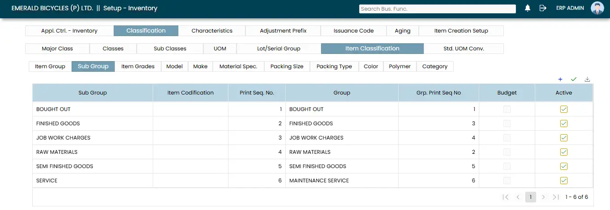

<div data-category="Inventory Control" data-title="Sub Group" data-updated="January 27, 2026" data-contributors="RoadmapIT" data-breadcrumb="Home,Inventory Control,Sub Group">
  <div class="page-content">
    <p>A Sub Group is a way of grouping items that have the same sub-category, such as type, size, color, material, or usage. A Sub Group helps to refine and differentiate the items more precisely and accurately.</p>
    <p>The Item Sub Group and Sub Group Description are defined in this screen. The Sub Group cannot be modified or deleted when there exist child records.</p>
    <h5>Navigation path:</h5>
    <p class="fs-6">Supply Chain Management \ Inventory \ Setup \ Setup - Inventory</p>
    
    <ul style="list-style-type: none; align-content: center">
      <li class="mouse-icon">
        Click
        <i class="bi bi-plus fs-4 mx-2 text-primary"></i>
        button to create a Sub Group
      </li>
      <li class="mouse-icon">Enter Sub Group.</li>
      <li class="mouse-icon">Enter the Item Codification</li>
      <li class="mouse-icon">Enter Print Seq. No.</li>
      <li class="mouse-icon">Enter/Select the group from LOV; Grp.Print Seq.No. will be displayed automatically.</li>
      <li class="mouse-icon">
        Click
        <i class="bi bi-check-lg fs-4 mx-1 text-success"></i>
        to Save the Sub group.
      </li>
    </ul>
  </div>
</div>
